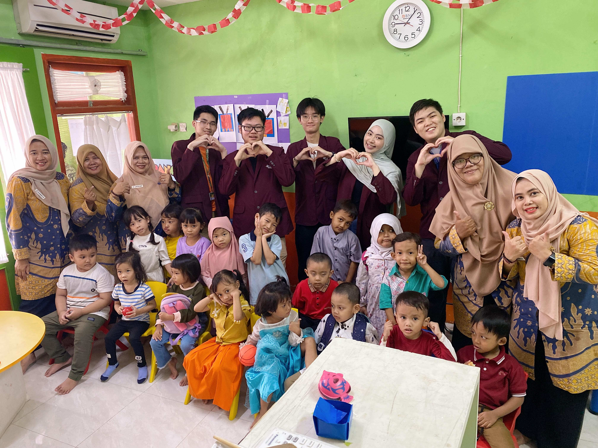
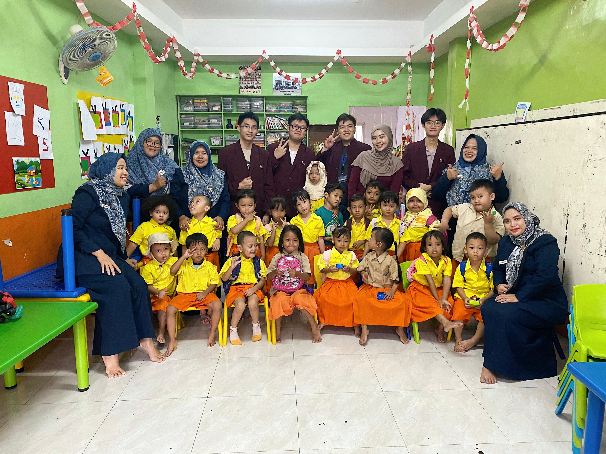
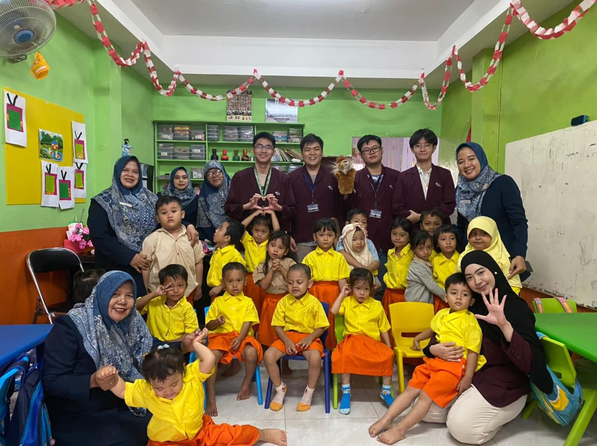

Project Showcase
Highlight of my featured works
Leadership – PAUD Bintang Kecil
Served as leader for 5 events at PAUD Bintang Kecil, where we taught children, designed activities, and built joyful learning environments. This role emphasized not only management but also empathy, creativity, and collaboration with fellow volunteers.




🌟 Impact
- Brought joy and meaningful experiences to children
- Organized creative learning activities
- Coordinated teamwork among volunteers
💡 Skills
- 👥 Team Leadership
- 🎤 Communication
- 📅 Event Organization
- 🤝 Collaboration
- 💡 Creativity
- 💖 Empathy
📌 Reflection
Leading PAUD Bintang Kecil events strengthened my leadership, organization, and teamwork skills. Teaching children also honed my communication and empathy, with the highlight being the joy and excitement reflected in the children’s smiles.